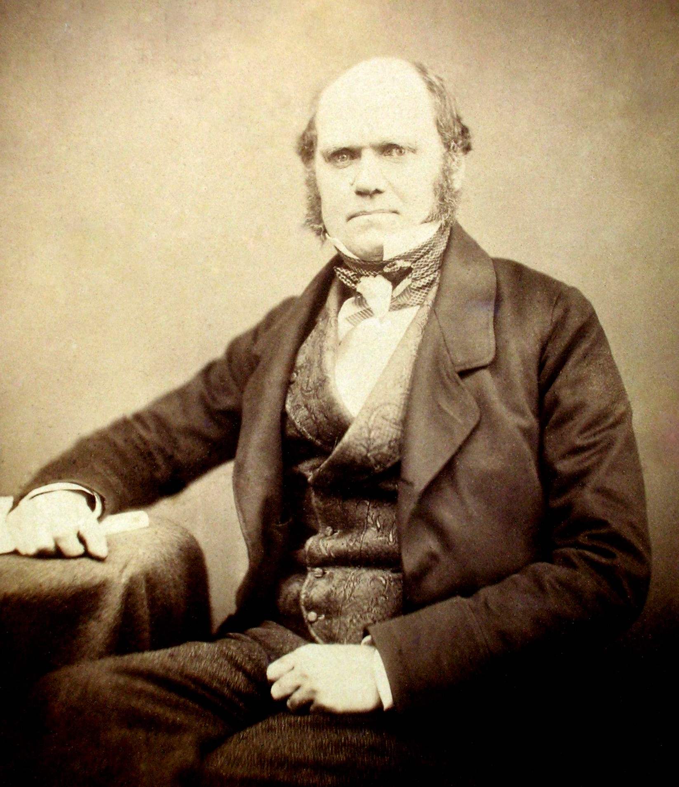
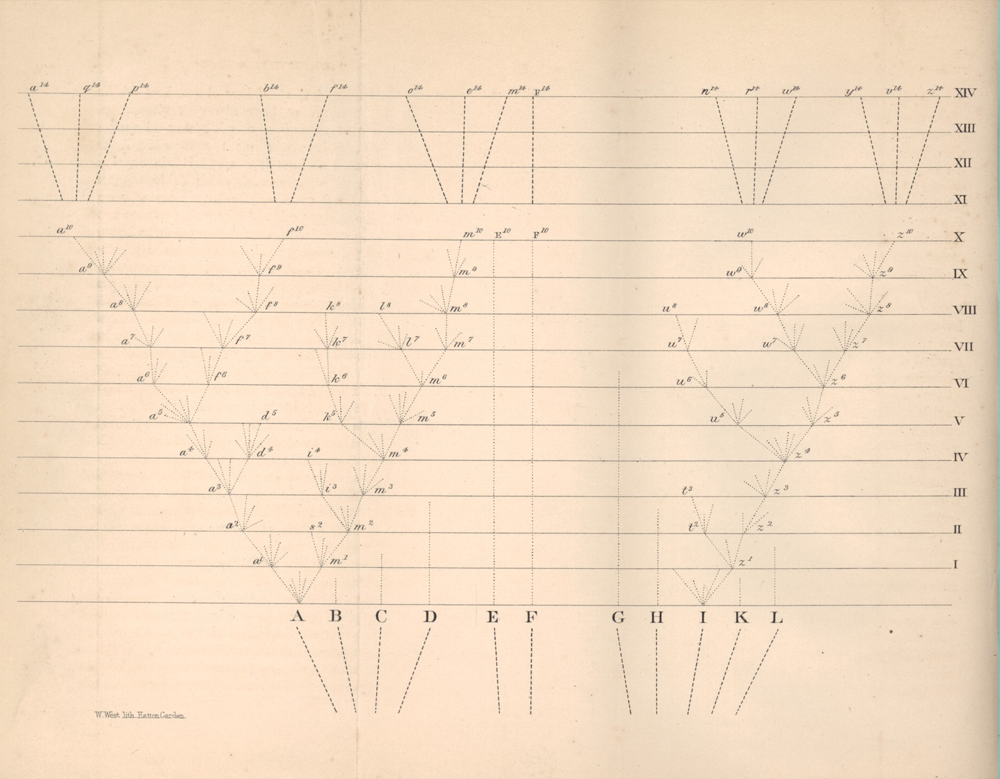

Find a watch lying in the dirt and you know, without being told, that someone made it. The hands sweep, the gears mesh, the whole thing is built to keep time. Wind and rain do not assemble watches. A person did.
Now look at an eye. It focuses itself for near and far, it opens and closes to the light, it even corrects the color fringe that ruins a cheap camera lens, and it does all of this in wet tissue you grew without thinking about it. A pocket watch is a child's toy next to it. So if a watch needs a watchmaker, an eye needs an eye-maker, and a hummingbird needs a hummingbird-maker, and you need one too. The living world is stuffed with parts that fit their jobs so well they look made on purpose, because surely nothing else could fit that well by accident.
That intuition is ancient, and it is the most powerful argument anyone ever made for God. It even has a name, the argument from design, and in 1802 an English clergyman named William Paley wrote it down so cleanly that it became required reading at Cambridge. Find a watch on a heath, Paley said, and you infer a watchmaker. Look at the eye, far finer than any watch, and infer its Maker. A young divinity student named Charles Darwin read Paley, loved him, and could practically recite him.
Then the same man spent the next thirty years quietly dismantling the argument he had loved. In 1859 Darwin published a single idea that leaves the watch lying right there on the ground, every gear as exquisite as before, and gently removes the watchmaker. He never denied the design. He thought the eye was a wonder to his last day. He just worked out how the wonder could build itself, with nobody steering, out of three cheap ingredients and one expensive one.

What follows is a walk through the actual argument, in Darwin's own order, the order of the book. We start where he starts, with a man in his backyard breeding pigeons. We end on the most quoted last sentence in the history of science. Eight stops. The text is the clean first edition of 1859, before Darwin, under fire, softened a few of his own lines; on the two or three places where the later wording flinched, you can open a panel and see exactly what changed.
Stop 1 / The on-ramp
He starts with pigeons, not apes
Chapter I, Variation under Domestication
Altogether at least a score of pigeons might be chosen, which if shown to an ornithologist, and he were told that they were wild birds, would certainly, I think, be ranked by him as well-defined species.
Darwin opens the most disruptive book in the history of biology not with fossils, or apes, or God, but with a man in his garden breeding pigeons. The choice is deliberate and a little sly. He wants to show you a thing you already believe, and get you to agree to it, before he turns it on something you don't.
Fancy pigeons were a Victorian craze, and Darwin threw himself in: he kept the breeds, joined the London pigeon clubs, killed and measured the birds at the kitchen table. And the breeds are ridiculous. The pouter puffs its chest into a balloon. The fantail fans thirty-odd tail feathers like a turkey. The short-faced tumbler has a face squashed down to a finch's. Show those to a bird expert as wild specimens, Darwin says, and he would sort them into different species, maybe even different genera, the next rank up.
Every one of them came from the same drab bird: the common rock-pigeon, Columba livia, the gray thing on the window ledge. Nobody argued with that, because it happened in plain sight, in recorded time, by a method anyone could watch. Breeders did it. They picked the birds with a bit more tail or a puffier chest, bred those together, picked again from the young, and again, and again, and the small differences piled up into a fantail.
That is the whole move, and it is worth slowing down on, because the entire book is a bet that this one move explains everything alive. Choose which individuals breed, keep at it long enough, and you can reshape a living thing past the point of recognition. Darwin called it artificial selection, artificial because a human hand does the choosing. He has just shown you a force that builds new kinds of creature. Now he only has to find that force running loose in the wild, with the hand taken away.
Stop 2 / The pressure
Far more are born than can ever live
Chapter III, the Struggle for Existence
I use the term Struggle for Existence in a large and metaphorical sense, including dependence of one being on another, and including (which is more important) not only the life of the individual, but success in leaving progeny.
The backyard breeder picks his pigeons by hand. For the idea to work in the wild, something has to do the picking with no hands at all. Darwin's second move finds that something, and it is not gentle.
Start with a fact so ordinary it is easy to walk past: living things make far more young than can ever survive. One poppy drops thousands of seeds. A cod lays millions of eggs. If even most of them lived to breed, and their young did the same, the world would be wall-to-wall poppies or cod inside a few generations.
Darwin did the arithmetic on the least likely animal he could pick, the elephant, the slowest breeder alive. Assume a pair starts at thirty, quits at ninety, and has six young in between. Run it out, and "at the end of the fifth century there would be alive fifteen million elephants, descended from the first pair." Fifteen million, from the slowest breeder on earth, in five centuries. The world is plainly not buried in elephants. So nearly all of them die before they ever breed.
He got the engine from an economist. Thomas Malthus had argued that human numbers always grow faster than the food supply, so scarcity and hunger never go away. Darwin took that bleak little law and turned it loose on all of life, "the doctrine of Malthus applied with manifold force to the whole animal and vegetable kingdoms." Always more mouths than there is food.
The word he reached for was struggle, and he is careful to say he means it broadly. Not mostly animals fighting. The seedling at the edge of the desert struggles against the drought. The robin struggles to get the worm before the next robin does. Most of the dying is quiet, the seed on bare rock, the chick that hatched a day late. The only point that matters is this: in every generation most do not make it, and which ones make it is not random.
Stop 3 / The engine
Selection with nobody doing the selecting
Chapter IV, Natural Selection
This preservation of favourable variations and the rejection of injurious variations, I call Natural Selection.
Now set the two halves next to each other, and the watchmaker quietly walks off the page.
Half one, from the pigeons: no two individuals are exactly alike, and a lot of the difference is heritable, handed down to the young. Half two, from the struggle: far more are born than can live, so most die before breeding. Stack them. If some of those small inherited differences happen to help an animal survive and breed even a little more often, then that animal leaves a few more young, who carry the helpful difference, and across generations it spreads. The differences that hurt die out with the animals that had them. Nobody chose. The dying did the sorting.
That is the hinge of the whole book, and the trick is in who took over the breeder's job. With the pigeons, a person decided which birds bred. In the wild, the surroundings decide, automatically, just by which animals live long enough to breed and which don't. A hard winter "selects" the thicker coat. A quicker hawk "selects" the quicker mouse. No chooser, no goal, no plan, only the patient bookkeeping of who left more young. Darwin named it in one flat sentence: "This preservation of favourable variations and the rejection of injurious variations, I call Natural Selection."
The thing to feel is how slow and how blind it is. It is not trying to build anything. It cannot look ahead or aim at a result. It just keeps the slightly better and drops the slightly worse, every generation, for as long as there have been generations. Darwin's own image is almost unsettling: natural selection is "daily and hourly scrutinising, throughout the world, every variation, even the slightest; rejecting that which is bad, preserving and adding up all that is good." Add up enough tiny improvements, each kept only because it happened to work, and you end with an animal that looks built for its life, because everything about it that didn't work is already dead.
A phrase Darwin did not write
The line nearly everyone hangs on Darwin, survival of the fittest, is not in this book, and was not even his to begin with.
A small swap with a very long shadow. Most of what people resent about "Darwinism" rides on three borrowed words he was talked into adding.
Stop 4 / The shape of it
One tree, from a few forms or one
Chapter IV, the close
As buds give rise by growth to fresh buds, and these, if vigorous, branch out and overtop on all sides many a feebler branch, so by generation I believe it has been with the great Tree of Life, which fills with its dead and broken branches the crust of the earth, and covers the surface with its ever branching and beautiful ramifications.
Run natural selection long enough and it does more than tune one animal. It splits one kind into two.
Picture a single species spread across a patchy range. On the dry edge, the ones with deeper roots do better; on the wet edge, the ones that grow fastest. Each side gets nudged its own way, generation after generation, until one day the two ends can no longer breed together. One species has become two. Do that again and again, all the way down the ages, and the branches keep dividing. Darwin's name for the whole business was descent with modification: every species is just an older one, changed. (He almost never used the word we use; the noun "evolution" does not appear anywhere in the book.)
Follow that backward and you reach the most dizzying idea Darwin ever had. If species keep branching off from earlier species, then take any two living things, trace them back far enough, and the branches must meet. You and the oak in the yard share an ancestor, a long way down. So do you and the gut bacterium and the blue whale. All of life is a single family tree, grown, he says, from "a few forms or into one." Not thousands of separate creations. One trunk.
He believed that so concretely that he drew it, and the drawing is the only picture in the entire five hundred pages.

The drawing is abstract on purpose, only letters and lines, but the paragraph it goes with is some of the best prose he ever wrote. The living species are "the green and budding twigs." The extinct ones are the "dead and broken branches" buried in the rock. Whole limbs of the tree (the trilobites, later the dinosaurs) grew, took over the world, and snapped off. We are one small green twig near the top. Not the crown the tree was growing toward, not the point of it. Just the part that has not died yet.
Stop 5 / The hard case
He picks the hardest case himself: the eye
Chapter VI, Difficulties on Theory
To suppose that the eye, with all its inimitable contrivances for adjusting the focus to different distances, for admitting different amounts of light, and for the correction of spherical and chromatic aberration, could have been formed by natural selection, seems, I freely confess, absurd in the highest possible degree.
The honest test of an idea is whether its author goes hunting for the thing that would break it. Darwin does. He gives a whole chapter to "Difficulties on Theory," and he leads with the worst one there is, the very thing Paley built his watch out of: the eye.
He does not soften how bad it looks. He states the objection better than any opponent could, that an eye, with its self-adjusting focus and its aperture and its built-in fix for the color fringing that ruins a cheap lens, could be put together by a blind, step-by-step process "seems, I freely confess, absurd in the highest possible degree." Read that sentence on its own and it sounds like the author folding. It is the most quote-mined line Darwin ever wrote; to this day you can find it pulled out by itself and waved around as Darwin doubting Darwin.
But it is the windup, not the pitch, and the answer comes in the very next breath. The eye looks impossible only if it had to arrive all at once, finished. It didn't. Look around the living world and every half-step is still in use somewhere: a patch of light-sensitive cells on a flatworm; that patch dished into a cup that tells which way the light comes from; the cup narrowed to a pinhole that throws a crude image; the pinhole capped with a clear cover; the cover thickened into a lens. Each of those is a real, working eye in some animal alive right now, and each one beats the stage before it for a creature that needs to see.
So Darwin's reply is calm and total: if a smooth series of slightly better eyes can exist, each one useful enough to keep, then "the difficulty of believing that a perfect and complex eye could be formed by natural selection, though insuperable by our imagination, can hardly be considered real." The whole objection rests on assuming half an eye is worth nothing. Ask anyone with poor sight whether it beats going blind.
Stop 6 / The expensive ingredient
The one thing it can't do without: time
Chapter IX, On the Imperfection of the Geological Record
He who can read Sir Charles Lyell's grand work on the Principles of Geology, which the future historian will recognise as having produced a revolution in natural science, yet does not admit how incomprehensibly vast have been the past periods of time, may at once close this volume.
Natural selection is slow, which makes it expensive, and it pays in a single currency: time. Enormous amounts of it. More than a human head can really hold.
A river is the honest picture. Stand at the rim of the Grand Canyon and the gut feeling is that something violent did this, because the thing that actually did it, the thin river at the bottom, looks nowhere near up to the job. But the river did not cut a mile of rock in a flood. It cut it one grain of sand at a time, for millions of years, and millions of years was enough. Natural selection runs the same way: invisible in any one step, unstoppable across an eon.
The problem in 1859 was that hardly anyone believed the earth was old enough to bankroll it. So Darwin tried to make deep time concrete. He picked a valley in the south of England, the Weald, whose chalk ridges the sea had plainly worn back over the ages, estimated how long that one slow erosion must have taken, and printed the figure down to the year: "the denudation of the Weald must have required 306,662,400 years."
It was a blunder, and a telling one. The number was a back-of-an-envelope guess dressed up as a measurement, the critics fell on it, and Darwin, who hated a fight, quietly cut it from later editions. But he was right in the direction that counted, in a way his own century could not stomach: life needed hundreds of millions of years, and it turned out to have far more. The earth is about four and a half billion years old, a figure nobody could even reach until radioactivity was discovered, decades after Darwin was dead. His instinct was sound. His arithmetic just ran out ahead of the evidence, the same way it had with the elephants.
Stop 7 / The reckoning
What he couldn't know, and what he never said
Chapter XIV, the one line about us
Light will be thrown on the origin of man and his history.
A walk that showed only the strong parts would be a sales pitch, not the book. So here is what Darwin got wrong, what he could not have known, and the ugly thing later done in his name.
The biggest hole is heredity. His whole machine runs on small differences being passed down and added up, and he had no real idea how that worked. The common assumption of his day was blending: a mother's and father's traits mixed in the child like two cans of paint, an even gray. In 1867 an engineer named Fleeming Jenkin laid the problem out sharply. One animal born with a useful new trait would mate with an ordinary one, the child would have half as much of it, the grandchild a quarter, and the advantage would wash out to gray long before selection could fix it. On paper it was a real threat to the whole idea, and Darwin had no clean answer. The answer was already sitting unread in a journal: a monk named Gregor Mendel had shown, in the same decade, that traits pass down as separate particles (we call them genes) that don't blend or fade but stay whole and surface again intact. Darwin died never knowing about the one experiment that rescued his idea.
The second hole was time, and it came with a famous accuser. The physicist Lord Kelvin calculated, from how fast a molten earth would have cooled, that the planet was far too young, a few tens of millions of years, nothing like enough for slow selection to do the work. Kelvin was the most respected scientist in Britain, and he was wrong, because he had no way of knowing the earth runs its own furnace: radioactivity, undiscovered until the 1900s, keeps it hot and makes it billions of years old. Darwin had no answer at the time, and it shadowed the later editions.
And then the part that is not a scientific gap at all. This book is almost wholly silent about us. In five hundred pages Darwin allows himself exactly one careful sentence, near the very end: "Light will be thrown on the origin of man and his history." That is all of it. Our own story he saved for a separate book, The Descent of Man, twelve years later.
Stop 8 / The last sentence
Endless forms most beautiful
Chapter XIV, the final lines
It is interesting to contemplate an entangled bank, clothed with many plants of many kinds, with birds singing on the bushes, with various insects flitting about, and with worms crawling through the damp earth, and to reflect that these elaborately constructed forms, so different from each other, and dependent on each other in so complex a manner, have all been produced by laws acting around us.
There is grandeur in this view of life, with its several powers, having been originally breathed into a few forms or into one ... from so simple a beginning endless forms most beautiful and most wonderful have been, and are being, evolved.
Darwin ends not on a fanfare but on a hedge by a footpath, the kind of weedy tangle you would walk past without a second look. That is the whole point.
Look at it the way the book has taught you to look. Every plant and bird and insect and worm on that bank is the tip of a branch millions of years long. They are all cousins, all shaped by the same blind process, all wired into each other (the worm feeds the bird, the bird carries the seed) in a web that nobody drew up. "Elaborately constructed forms, so different from each other ... have all been produced by laws acting around us." Not by a maker reaching in from outside. By laws, grinding away on their own, in the open, the entire time.
Which brings us back to the watch in the dirt. Darwin never broke Paley's logic that the eye looks designed. He agreed with it to the end. What he did was hand us the missing third choice between dumb luck and a conscious designer, and that third choice, natural selection working through deep time, is the one that turns out to fit the evidence. The design is real. The designer is the part you can drop. The watch on the path made itself, slowly, and is making itself still.
And then the last word, literally. The book closes on a sentence so good it has outlasted every argument inside it. Notice what it does not contain: in this first edition of 1859, life's powers were "originally breathed into a few forms or into one," with no Creator anywhere in the line. Those two words came a year later. What Darwin wrote first, and meant, was barer and larger, and it ends on the only form of the word he would use, the verb, as the final word of the book: that from so simple a beginning, endless forms most beautiful "have been, and are being, evolved."
The four words he added a year later
The most famous sentence in science survives in two forms: the line Darwin set down in 1859, and the version almost everyone quotes, with four words slipped in under pressure for the 1860 edition.
The first-edition line is the one he wrote before he lost his nerve. It is the one on this page.
Where the words come from
The featured text throughout is the first edition of On the Origin of Species by Means of Natural Selection, published by John Murray on 24 November 1859. Every quotation is verbatim from that edition, Victorian spelling and all, and is checked against the page images. The first edition matters: it carries the argument at its cleanest, before five later editions of replies to critics piled on the hedges. Where a famous line was softened later, the panel shows you both.
- The Origin is quoted from the 1859 first edition (F373) at Darwin Online, the complete scholarly archive edited by John van Wyhe, checked against the original page scans.
- The changes between editions follow Morse Peckham's variorum text, The Origin of Species: A Variorum Text (1959), which collates every word Darwin altered across all six editions.
- The reading of the argument leans on Ernst Mayr's introduction to the 1964 Harvard facsimile of the first edition, James Costa's The Annotated Origin (2009), Gillian Beer's Darwin's Plots, and Janet Browne's two-volume biography. Where I say what Darwin could not yet know, the history is theirs.
- On what Darwin did and did not say about people, the source is Darwin himself: the 1859 Origin keeps almost entirely to plants and animals, and the human argument waited for The Descent of Man (1871). "Survival of the fittest" is Herbert Spencer's phrase, which Darwin only let into the fifth edition in 1869.
The walk is mine. I have tried to let the argument land at full strength, to quote the holes Darwin himself worried about rather than paper over them, and to keep the famous misreadings (the cold social-Darwinist one most of all) clearly labelled as not his.
The diagram on the homepage card and below is the only illustration in the entire first edition: Darwin's branching "tree of life," a fold-out plate between pages 116 and 117, in the public domain. The 1855 portrait is by Maull & Polyblank, also public domain. Both are reproduced from the scans at Darwin Online and Wikimedia Commons.